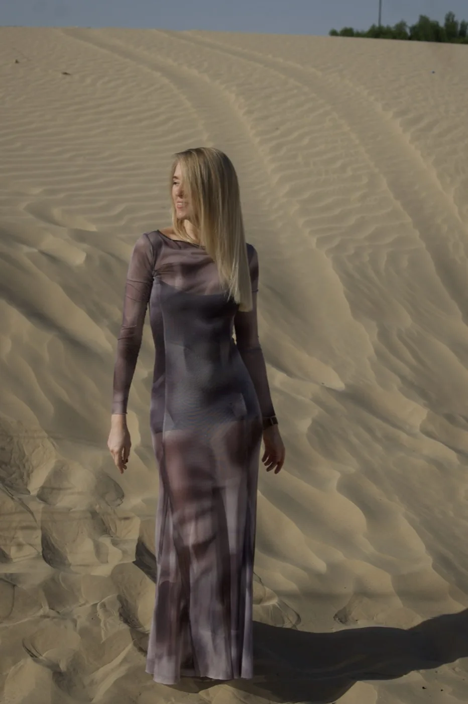
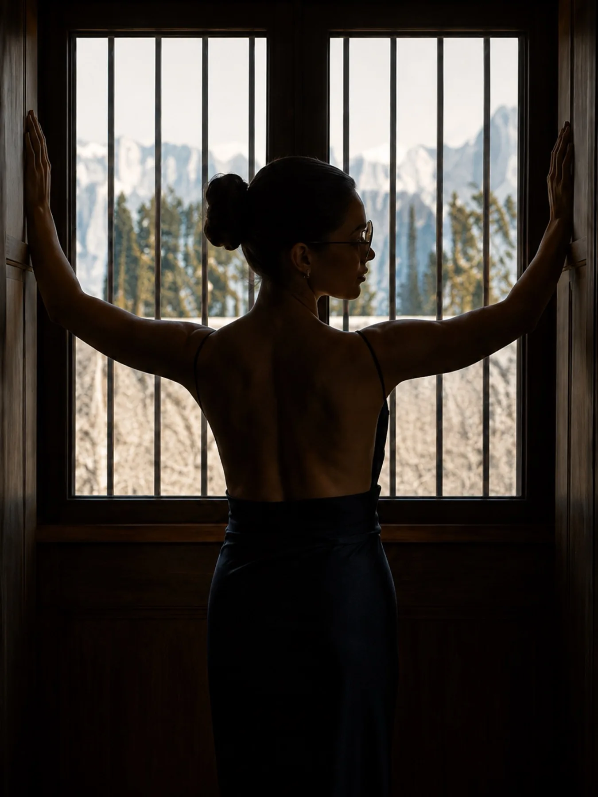

Everyone shoots at the Burj Khalifa. It's iconic for a reason, but it's also the single most photographed backdrop in the city, which means it's the hardest place to make an image feel like yours. These are six locations I've actually shot at, plus a few lesser-known spots worth the drive, with a Google Maps link for every one so you can find it yourself.
I've built this list from real sessions, not a scouting trip. Each location below has a portrait or editorial shoot behind it, so you're seeing exactly what the light and setting actually produce, not a stock photo of an empty street.
Locations I've actually shot at


Nothing replicates the light out here. Thirty minutes from the city, the desert gives you uninterrupted golden hour: warm, low, and completely free of the haze that softens sunset light downtown. Shoot within the first or last hour of daylight only; midday desert light is flat and unworkable, and the heat makes it miserable to shoot in anyway.


Clean architecture, wide pedestrian streets, and murals that change often enough to keep the backdrop feeling current. It's one of the few central Dubai locations where you can shoot on foot without needing a permit for casual portrait work, which makes it a reliable go-to for quick sessions.


Sculptural architecture, glass, and strong geometric lines. DIFC is the location I reach for when a shoot needs to feel sharp and editorial rather than soft or lifestyle. Shoot in the early morning before the financial crowd fills the walkways.


The one indoor location on this list. Curio Heritage is all warm wood panelling, carved screens, and quiet directional light, a completely different palette from anything outdoors in this city. It's the location I reach for when a shoot needs to feel intimate and textured rather than backdrop-driven.


Natural light, movement, and a relaxed energy that studio sessions can't fake. This is the location for lifestyle, fitness, and swimwear-adjacent work. Go early morning for soft light and an empty beach, or last light for the warmest tones.


About 40 minutes from Dubai, Ajman's waterfront corniche is far less crowded than anything comparable in the city. Worth the drive for a session that needs open space and a slower pace, without a single tourist in the frame.
Hidden gems worth the drive
These are real Dubai and UAE spots I haven't personally shot yet, but they consistently come up as the ones locals recommend when you ask for something beyond the usual list.
A natural hot spring about 90 minutes from Dubai on the east coast, tucked into the Hajar Mountains. Dramatic rock terrain and mineral-blue water make it one of the most visually unusual settings in the UAE.
Open in Google MapsTucked behind Jumeirah 3, this small, less-trafficked stretch of coastline gives you skyline views without the Kite Beach crowds. Popular with locals precisely because it isn't on the typical tourist map.
Open in Google MapsMan-made desert lakes about 40 minutes outside the city, surrounded by dunes and, occasionally, grazing oryx. One of the few places near Dubai where you get water, desert, and wildlife in the same frame.
Open in Google MapsRoughly 90 minutes from Dubai, Hatta trades skyline and sand for mountains, a turquoise dam lake, and heritage villages. The most dramatic change of scenery you can reach in a single day from the city.
Open in Google MapsMany public locations in Dubai technically require a filming or photography permit, and enforcement varies. Studio and semi-private locations (Marina walk, City Walk, beaches) are generally fine for casual portrait sessions with a small setup. For anything with lighting equipment, a team, or a commercial shoot, check with DFC (Dubai Film and TV Commission) first.
Dubai's range is what makes it genuinely interesting to shoot in: desert, marina, heritage architecture, and mountains, all within a couple of hours of each other. The Burj Khalifa will always be there if you want it. These six, and the four hidden gems above, are where the more interesting frames usually come from.
If you want to shoot at any of these locations, or somewhere else in the UAE entirely, get in touch and we'll plan the session around the light and the location together.
Frequently Asked Questions
Work with me
Based in Dubai. Available for portrait, editorial, and location-based sessions anywhere in the UAE. WhatsApp is the fastest way to reach me.